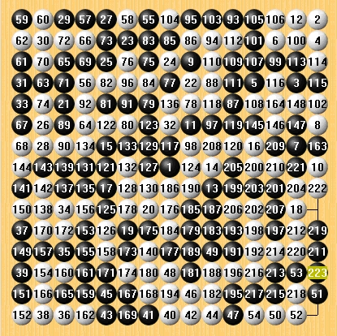

奇妙的黑VCF
#1 奇妙的黑VCF 作者：冷面孤煞 发表时间：2009-5-23 19:16:04
 哦啦啦，欧耶耶
哦啦啦，欧耶耶=======上图对应的爱五子棋谱代码如下，以便你拆解：========
h8o15n12o14l12m14n9o10i13o8i10n15j7j8e9l9e7n6f5g6c11i12f14h13e13b10e15b9c15b14a12h10a11c6c4c1a5b1a3h1g1i1e1j1e2i2k1h3j4m1o2n1n3l1
======================================================
［ 逆刃 于 2009-5-23 22:08:30 时奖励此帖[金币加 20 威望加1］
#2 Re:奇妙的黑VCF 作者：冷面孤煞 发表时间：2009-5-23 19:23:28
怎么V怎么V，哦啦啦，欧耶耶
#3 Re:奇妙的黑VCF 作者：五子天涯 发表时间：2009-5-23 20:11:27
=======上图对应的爱五子棋谱代码如下，以便你拆解：========
a3b1a5c1e1h1g1i1k1j1o2l1n3m1j4n1e2i2c4h3f5g6e7c6e9b9a11b10c11b14a12o15c15n15e15o14f14m14e13h13i13i12l12h10i10j8j7l9n9o8n12o10h8n6g15d12d15f15a15b15a13a14b12d10c13d14d13b13a10a9c12c14e14b11e11e12g13f13h12i11g11f10g14g12h14i14k11j12j10i9m13n14i15f12k15j14j15h15l15m15l14o11l13l11k13j13k12k14n13o13o12m12k10k9l10m10f11d11c10c9h9j11g10i8e8e10e6e5g8f7g9g7f9d9d8f8d7h11c8g4c7b6a7b7b8a8a4a6a2a1d5b3d4d6b4e4d2c3c2b2f2g2e3c5d3d1f1b5f4f3g5h6h4f6i5g3j5h5i3j2i6h7i4i7j6j3k4l4k5h2k2k3m5l5k7l8m7l6l7n7k8k6m6j9m9m8m3m4m2l3l2n2o5n4n10n11o9m11n8o7o4n5o3o6o1
======================================================
#4 Re:奇妙的黑VCF 作者：冷面孤煞 发表时间：2009-5-23 22:12:43
楼上什么算的啊，哈哈，哦啦啦，欧耶耶
#5 Re:Re:奇妙的黑VCF 作者：逆刃 发表时间：2009-5-23 22:14:46

这个是VCF的答案，用软件算的，V成满盘了，有谁知道这个是怎么设计出来的？能给予解释的奖励威望。
#6 Re:奇妙的黑VCF 作者：岳麓小棋后 发表时间：2009-5-23 22:17:12
晕倒，这不是诱杀人脑吗？
#7 Re:奇妙的黑VCF 作者：冷面孤煞 发表时间：2009-5-23 22:28:34
小棋后我这个奇妙的VCF不错吧
#8 Re:奇妙的黑VCF 作者：岳麓小棋后 发表时间：2009-5-23 22:32:12
难怪非鸟说爱五子棋网上的VCT好变态，看来VCF题也很变态嘛，也没办法，谁叫大家都在比V的长度呢
#9 Re:奇妙的黑VCF 作者：五子天涯 发表时间：2009-5-23 22:36:07
又是一个大满贯
=======上图对应的爱五子棋谱代码如下，以便你拆解：========
b14a15b13a14a11b11a9b15a7b6c5b4b3a4a1a3c11c15e15d15i15f15l15m15o14n15o11o15o10n9i13n14j12f12j11f11d9h10h8h9g7g8i6f7n4n1k3k1k2m6d1l7e1j10f2g4h2i9h1
======================================================
#10 Re:奇妙的黑VCF 作者：冷面孤煞 发表时间：2009-5-23 22:38:41
发个短的大家满意给威望哦=======上图对应的爱五子棋谱代码如下，以便你拆解：========
h8h3j2j5k4l7m9l11n6j13i10f13c12d11i6l5j8d9e7f9d6
======================================================
白VCF，哦啦啦
#11 Re:奇妙的黑VCF 作者：白衣神童小剑魔 发表时间：2009-5-23 23:39:16
=======上图对应的爱五子棋谱代码如下，以便你拆解：========
h8h3j2j5k4l7m9l11n6j13i10f13c12d11i6l5j8d9e7f9d6k6i4n9m8k12m10h15i14e12g14b9c10e9c9h9g9i8j7g10f11h11i12e8d7e10e11h7g8j9k10g6f5h5f7k5i5h6h4n5m5k8m6k9k7l9i9l6l8l3l4
======================================================
#12 Re:Re:Re:奇妙的黑VCF 作者：快乐天羽 发表时间：2009-6-1 19:52:56
这个简单，先摆满盘，然后网下拿子，一个黑一个白的拿，只要保证拿时，不出现任何一方胜的情况就可以了#13 Re:奇妙的黑VCF 作者：杨乐 发表时间：2009-6-4 3:35:40
这个很简单 用围棋程序以之结合编出来的,只要懂的人就知道,当然对一些程序和软件也要有一定的了解才编的出来!~ 小棋后你应该明白吧!~!~!~!